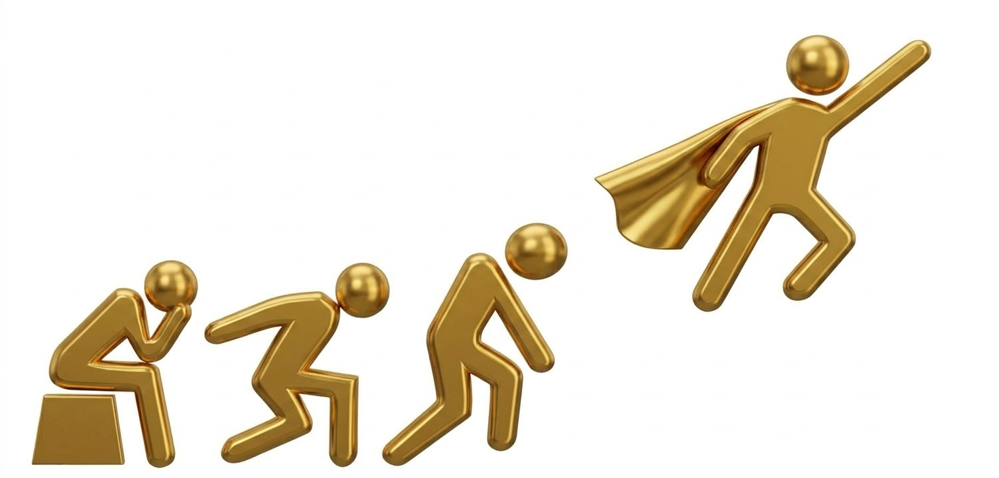

COACHING WITH ME
Coaching is a collaborative journey where you can gain clarity, reconnect with yourself, and move toward meaningful change.
Book a Session
WHAT IS COACHING?
Coaching gives you dedicated time and space to step back from the demands of everyday life and focus on yourself.
Rather than telling you what to do, I work with you to explore your goals, identify what may be holding you back, and discover strategies that work for you.
THE PROCESS
We begin by understanding where you are and what you would like to change.
Together, we explore your needs, values, goals, and the patterns that may be affecting your wellbeing.
We identify small, realistic steps that move you toward the change you want.
You build awareness and practical habits that can support you beyond the coaching sessions.
MY APPROACH
My approach brings together coaching, mindset and behavioral strategies, with an understanding of the realities of healthcare.
The goal is not perfection. It is to create meaningful changes that are realistic enough to become part of your everyday life.
IS COACHING FOR YOU?
You feel overwhelmed by work or daily responsibilities.
You want to prevent burnout and protect your energy.
You are struggling to maintain healthy boundaries.
You want to reconnect with yourself and your priorities.
You are going through a transition and need clarity.
You are ready to take intentional steps toward change.
FAQ
According to the International Coaching Federation (ICF), coaching is:
“Partnering with clients in a thought-provoking and creative process that inspires them to maximize their personal and professional potential.”
In coaching, you are the expert in your own life. My role is to create a safe, supportive space where you can gain clarity, explore new perspectives, discover your own insights, and turn them into meaningful action.
Step 1 — Clarify
Explore what's currently happening in your life and what you want to change.
Step 2 — Explore
Identify patterns, challenges, limiting beliefs, and what may be keeping you stuck.
Step 3 — Discover
Find new perspectives and possibilities.
Step 4 — Take Action
You leave each session with practical steps—not just motivation.
Step 5 — Grow
Create lasting change that feels right for you
Your goals. Your insights. Your choices.
My role is to help you see what’s possible and move forward with confidence.
Therapy generally focuses on mental health, emotional healing, and addressing psychological concerns or past experiences.
Coaching focuses on the present and future—helping you gain clarity, explore possibilities, set meaningful goals, and take action toward the life or changes you want.
Coaching is not therapy, diagnosis, or medical treatment.
Both can be valuable—the right support depends on what you need.
I primarily support healthcare professionals, drawing on my own experience in healthcare and coaching.
I also work with individuals from different backgrounds who are looking for greater clarity, confidence, resilience, balance, or positive change in their personal or professional lives.
Wherever you are in your journey, coaching starts with where you are and supports where you want to go.
Coaching sessions are primarily online, offering you the flexibility to access coaching wherever you are.
Each session lasts 60 minutes.
There is no fixed number of sessions. It depends on your goals, needs, and pace that feel right for you. Some clients may benefit from a few sessions, while others choose to continue longer for deeper and ongoing growth.
YOUR NEXT STEP
If you're ready to create more clarity, balance, and resilience, let's talk.
Get in Touch